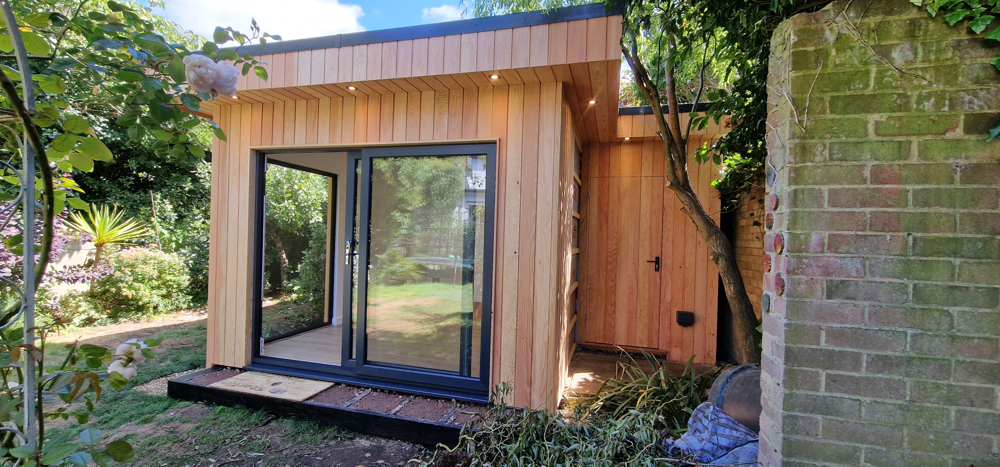
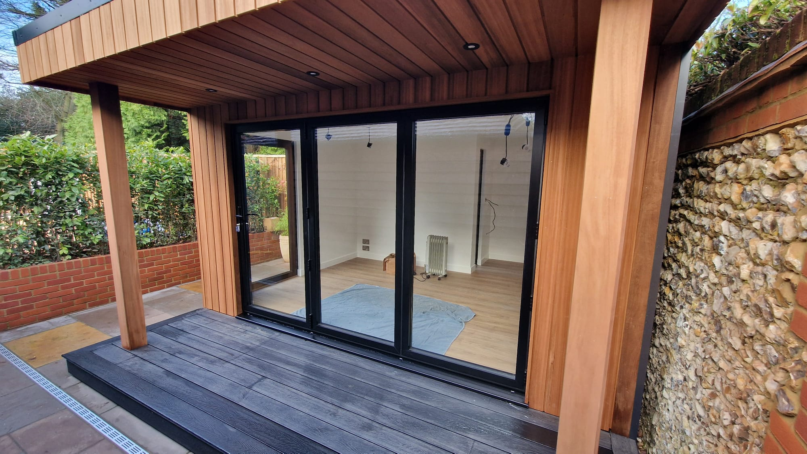
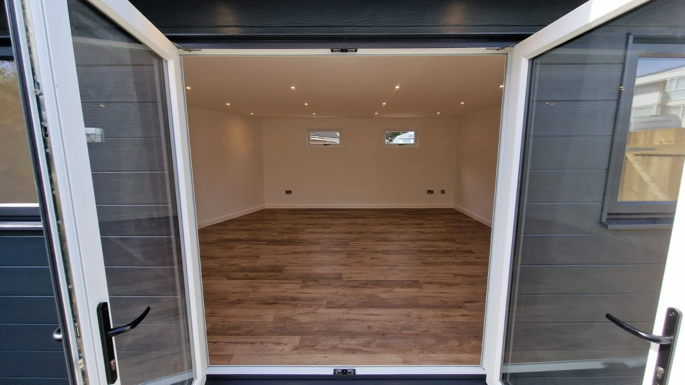
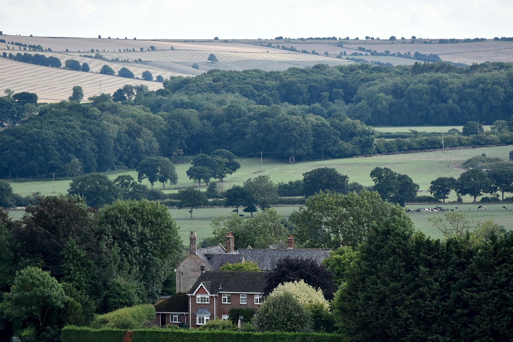
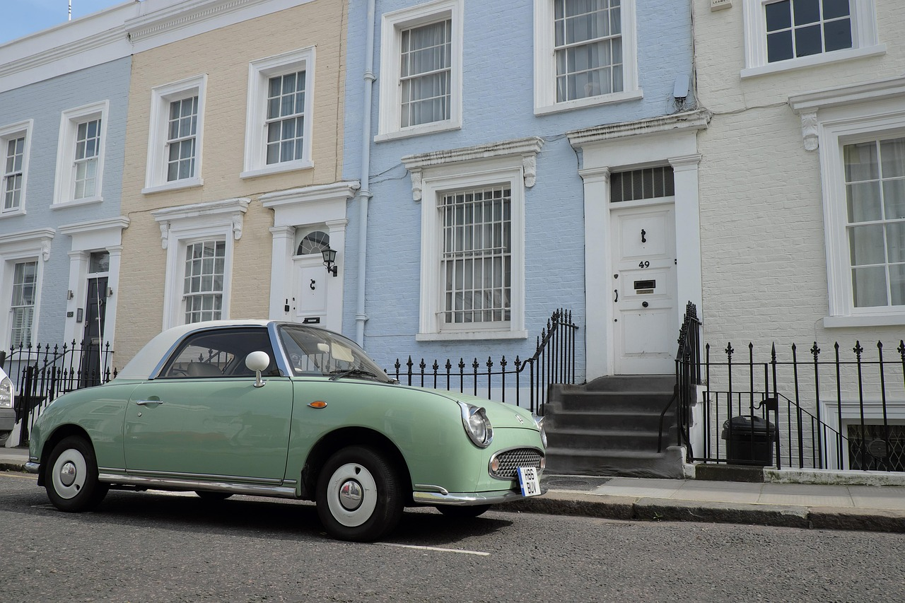
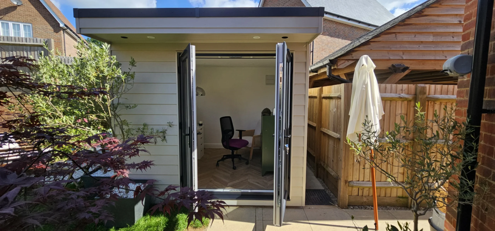
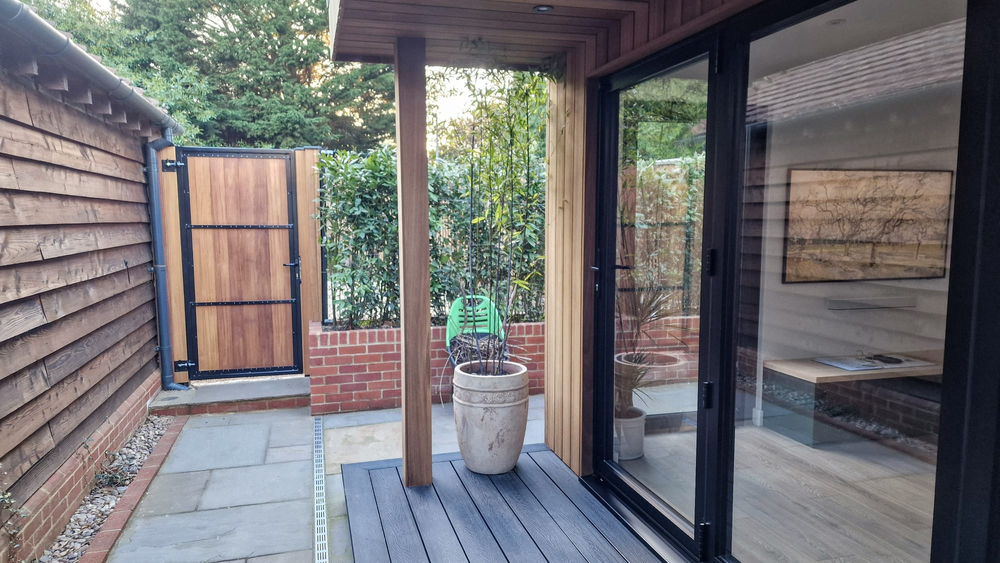
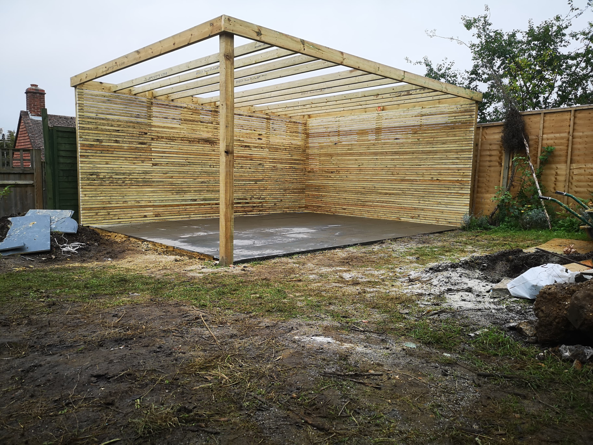

Coastal Weatherproofing
Brighton weather can be salty and damp. We use treated timber, solid seals, and proper insulation so your garden room stays dry and strong all year.
GARDEN ROOMS BRIGHTON
ARC Sussex Carpentry specializes in designing and building bespoke garden rooms in Brighton and across Sussex. We deliver custom-built outdoor spaces tailored to your needs—from stylish home offices and art studios to cosy family retreats. Our experienced team of local carpenters knows Brighton inside-out, ensuring your garden room complements your property, handles the coastal climate, and enhances your lifestyle.
Book a FREE consultation with us today

OUR WORK


LOCAL EXPERTISE



DESIGNING FOR BRIGHTON'S CLIMATE
Brighton weather can be salty and damp. We use treated timber, solid seals, and proper insulation so your garden room stays dry and strong all year.
We design your Brighton garden room to soak up the sun — using clever placement and large windows where possible.
Go green with eco insulation, solar panels, or green roofs. We support Brighton's eco-conscious homeowners with smart choices.
Brighton's gardens can get soggy. We build with proper base systems, rainwater control, and roof drainage so your garden room stays dry underneath too.
DESIGN DETAILS
Turn one space into many. Your garden room can be a gym by day, guest room by night — or a mix of office and chill zone. Zoning and smart storage make it work.
With neighbours close by, soundproofing helps. We use acoustic panels, insulated walls, and sealed doors to create calm.
Built-in shelves, secret drawers, and vertical cabinets keep your space clear and stylish.
Add a small deck or steps to connect the indoors and outdoors. Perfect for sunny lunches or a post-workout break in the garden.


THE ARC DIFFERENCE
We don't do flat-pack or cookie-cutter kits. Every garden room Sussex project is custom-designed by hand. You get solid carpentry, fine finishes, and a garden room that fits your home perfectly — even in tight, tricky Brighton spaces.
From Brighton's windy coastlines to its narrow back gardens, we know the area. Our team handles everything from sloped gardens to trees with preservation orders. We work quickly and keep you in the loop at every step.
CARPENTERS IN BRIGHTON
We're not a faceless firm — we're your local Sussex carpenters. We live here, we build here, and we care. Our team listens, adjusts, and supports you throughout the process. With ARC Sussex Carpentry, your vision is in trusted hands.
A well-built garden room is more than extra space—it's an investment in your home's value and lifestyle.
In Brighton's competitive market, buyers love flexible outdoor spaces. Estate agents estimate a bespoke garden room can add 5–15% to your home's value.
We've helped Brighton homeowners add:
These spaces sell a lifestyle buyers want: indoor-outdoor living, privacy, and flexibility.
For landlords or homeowners considering AirBnB or short-term lets, a garden room can quickly pay for itself. Brighton's busy tourism scene creates strong demand for unique, self-contained spaces.
And unlike major home extensions, most garden rooms don't need planning permission, saving you time and money.

CARPENTERS IN BRIGHTON
Wondering what other carpentry services we provide? There is nothing we cannot do. Click below to view our other Carpentry services.
View all Carpentry ServicesFAQS
Common questions we are asked about building Garden Rooms in Brighton and across Sussex.
Most garden rooms in Brighton don't need planning permission if they meet certain size and placement rules. But always check with the Brighton & Hove City Council or ask us to guide you.
Yes, working with local experts ensures your garden room in Sussex is built safely, legally, and to high standards — with smart design suited to your space.
We blend expert carpentry with true local knowledge. Each garden room Brighton project is tailored to the client — no kits, no shortcuts, just great service and craftsmanship.
Use FSC-certified wood, natural insulation, green roofs, or solar panels. We offer plenty of eco upgrades that match Brighton's green values.

garden rooms Brighton homeowners trust.
Let's bring your idea to life — built to last, tailored to you, and ready for Brighton's breeze and buzz.
Contact us today for a free quote or consultation